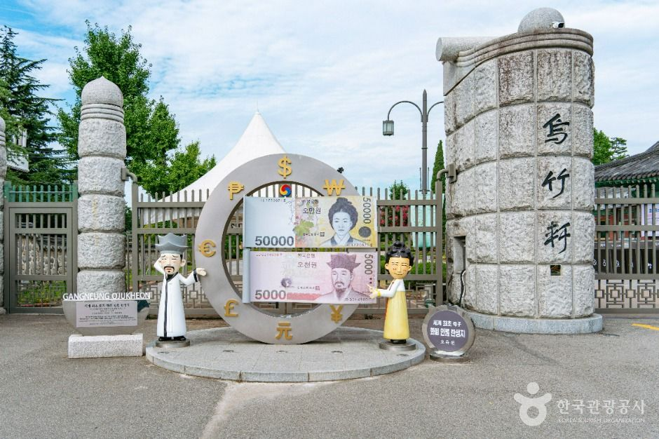
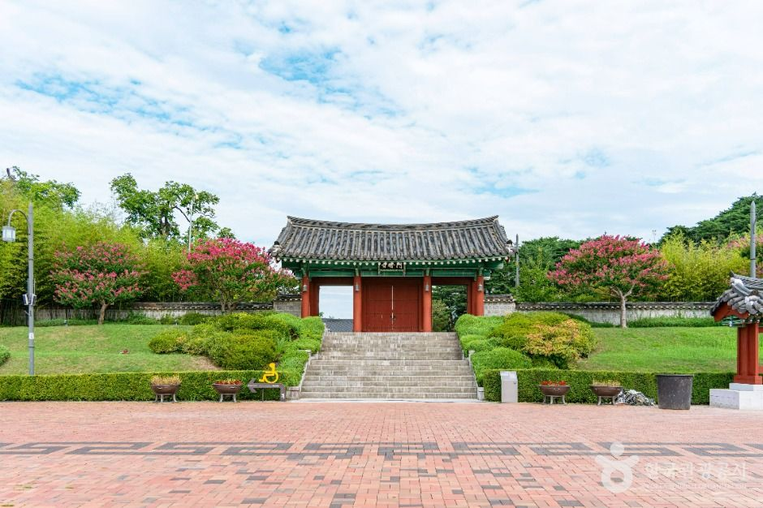
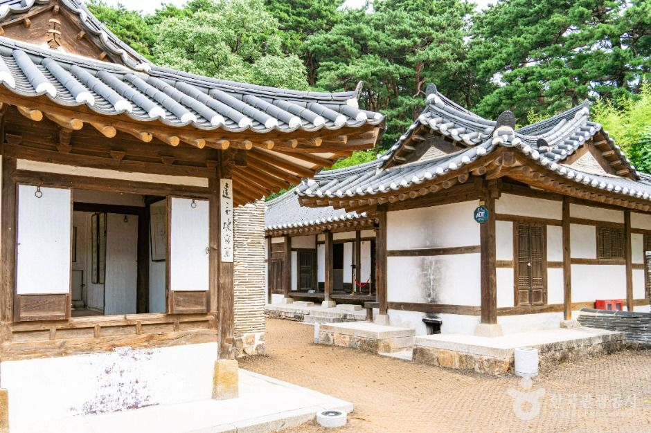
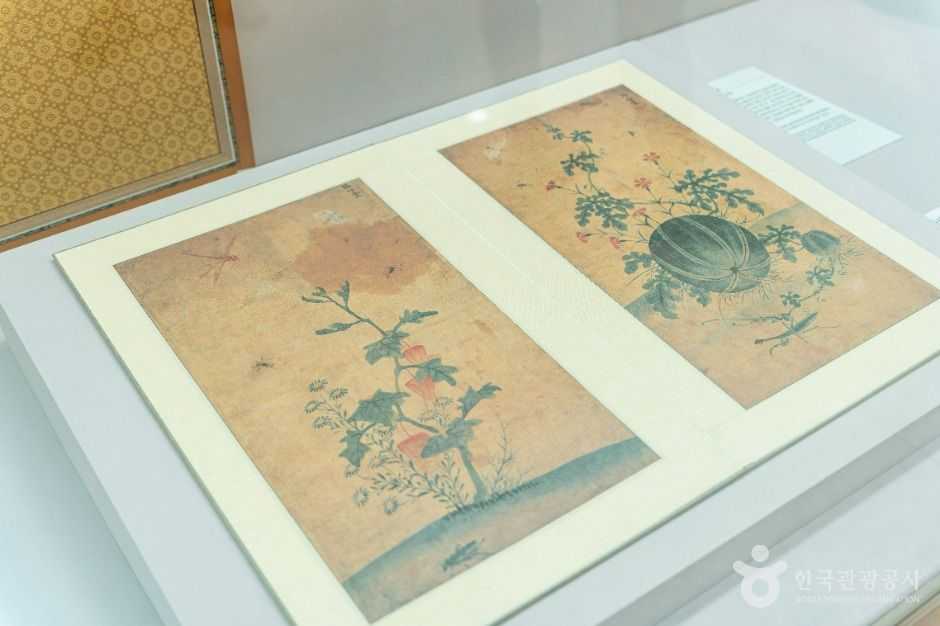
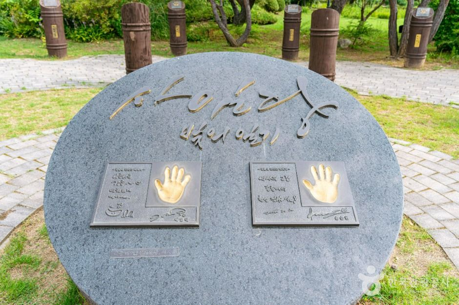
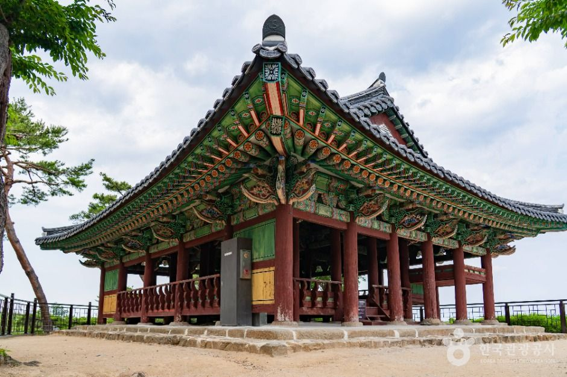
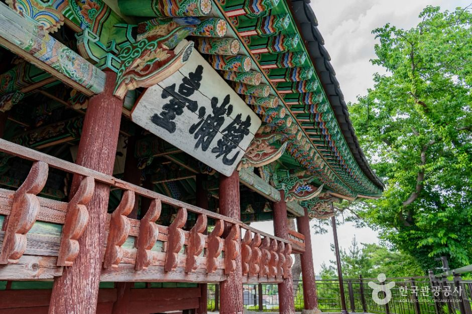

PROLOGUE
지폐 두 장에 나란히 실린 집
오천 원권의 앞면과 오만 원권의 앞면. 한국 사람이 가장 자주 손에 쥐는 두 장의 종이돈에는 어머니와 아들이 각각 인쇄돼 있다. 신사임당과 율곡 이이. 두 사람이 태어난 자리가 강릉의 한 별당, 오죽헌이다.
한 집에서 지폐 인물이 두 명 나온 곳은 전국에 여기뿐이다. 교과서에서 이름으로만 알던 두 사람이 실제로 어떤 공간에서 살았는지 눈으로 확인하고 싶어서, 한여름의 강릉으로 향했다. 매표소를 지나면 입구에서부터 두 장의 지폐를 본뜬 조형물이 방문자를 맞는다 — 이 집이 어떤 곳인지 한 컷으로 설명하는 셈이다.

SCENE 01
배롱나무 붉게 핀 여름의 경내
7월 중순의 오죽헌은 배롱나무의 계절이다. 문으로 오르는 계단 양옆으로 붉은 꽃이 피어, 조선 초기의 단정한 목조 건물과 대비를 이룬다. 경내는 생각보다 넓고, 동선은 완만한 오르막을 따라 자연스럽게 이어진다. 관람로 초입에서 걸음을 늦추게 되는 건 건물보다 나무들 때문이다 — 이 마당의 배롱나무와 소나무는 수백 년째 같은 자리를 지키고 있다.
먼저 뜻을 크게 세우되, 성인을 표준으로 삼아 털끝만큼이라도 미치지 못하면 나의 일은 끝나지 않은 것이다. 이이, 『자경문(自警文)』 중
스무 살의 이이가 스스로를 경계하며 쓴 『자경문』의 첫 조목이다. 오죽헌의 문 이름 '자경문'도 여기서 왔다. 문을 지나며 이 문장을 떠올리면, 관광지가 아니라 한 사람의 다짐이 시작된 장소를 걷고 있다는 감각이 생긴다.

SCENE 02
몽룡실 — 용꿈을 꾼 방
오죽헌 본채는 조선 초기 별당 건축이 원형 가깝게 남은 드문 예다. 마루의 결, 기둥의 비례, 낮은 처마 — 화려한 데가 하나도 없는데 오래 보게 된다. 이 집의 오른쪽 방이 몽룡실(夢龍室)이다. 신사임당이 용이 문머리에 서리는 꿈을 꾸고 율곡을 낳았다는 방. 방은 놀랄 만큼 작다. 역사책의 큰 이름이 시작된 자리가 한 평 남짓한 온돌방이라는 사실이, 오히려 실감을 만든다.
관광정보 — 오죽헌
조선시대의 대학자 율곡 이이와 관련하여 유명해진 강릉 지역의 대표적인 유적지인 오죽헌은 오죽헌과 강릉시립박물관으로 구분된다. 오죽헌은 조선 초기의 건축물로 건축사적인 면에서 그 중요성을 인정받아 보물로 지정되었다. 이곳 오죽헌 몽룡실에서 율곡 이이가 태어났다. 경내에는 오죽헌을 비롯하여 문성사(文成祠), 사랑채, 어제각(御製閣), 율곡기념관 등이 있다.
출처: 한국관광콘텐츠랩 관광정보 · ⓒ한국관광공사
SCENE 03
율곡기념관 — 붓끝으로 남은 가족
경내의 율곡기념관에는 사임당·율곡·매창·옥산, 한 가족 네 사람의 유작이 전시돼 있다. 가장 발길을 붙드는 건 사임당의 초충도(草蟲圖) 연작이다. 수박과 가지, 여치와 나비 — 마당에서 흔히 보던 것들을 저만한 밀도로 그렸다. 5만 원권 뒷면 그림의 원본 계열을 유리장 너머로 직접 보는 경험은 지폐로 보던 것과 전혀 다르다.


1962년부터 매년 율곡을 추모하는 제례가 이곳에서 봉행된다. 문성사에는 율곡의 영정이 모셔져 있다. 오죽헌은 생가이면서 동시에, 오백 년 가까이 이어진 기억의 장치이기도 하다.
SCENE 04
오죽헌에서 경포로 — 하루를 잇는 동선
오죽헌에서 차로 10분이면 경포호에 닿는다. 오죽헌 관람을 마쳤다면 경포대까지 이어 걷는 코스를 권한다. 율곡이 열 살에 경포대를 보고 『경포대부(鏡浦臺賦)』를 지었다고 전해지니, 같은 하루에 두 곳을 잇는 것은 단순한 관광 동선이 아니라 한 사람의 소년기를 따라 걷는 길이기도 하다.
- 오죽헌 · 강릉시립박물관관람 1시간 30분 안팎 — 본채·문성사·어제각·율곡기념관 순서로
- 경포호 산책로호수 북쪽 언덕 방향으로, 소나무 숲길
- 경포대관동팔경의 누각 — 보물 제2046호
- 경포해변여름이라면 해 질 무렵까지
관광정보 — 강릉 경포대
강릉 경포대는 강릉을 대표하는 명승지 중 하나로, 국가지정문화재 보물 제2046호로 지정되어 있다. 관동팔경의 하나이며, 경포 호수 북쪽 언덕에 있는 누각이다. 고려 충숙왕 13년에 세워진 이래 강릉의 풍류가 모이는 자리였다.
출처: 한국관광콘텐츠랩 관광정보 · ⓒ한국관광공사

PRACTICAL
방문 정보
아래 정보는 한국관광콘텐츠랩에서 내려받은 관광정보를 정리한 것입니다. 방문 전 최신 정보를 다시 확인하세요.
| 주소 | 강원특별자치도 강릉시 율곡로3139번길 24 (죽헌동) |
|---|---|
| 운영 시간 | 매표 09:00–17:00 · 관람 09:00–18:00 |
| 휴무일 | 연중무휴 (1월 1일·설날·추석 당일은 오죽헌만 개방, 실내 전시실 휴관) |
| 관람 요금 | 어른 3,000원 (단체 2,000원) · 청소년·군인 2,000원 (단체 1,500원) · 어린이 1,000원 (단체 500원) 무료: 만 65세 이상 · 강릉 시민 · 만 6세 이하 |
| 홈페이지 | gn.go.kr/museum |
| 주차 | 무료 |
| 경포대 | 강릉시 경포로 365 (저동) · 문의 033-640-5119 · 연중무휴 |
출처: 한국관광콘텐츠랩 관광정보 · ⓒ한국관광공사